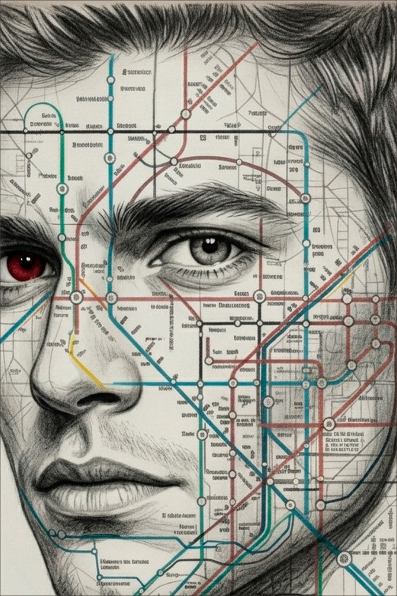
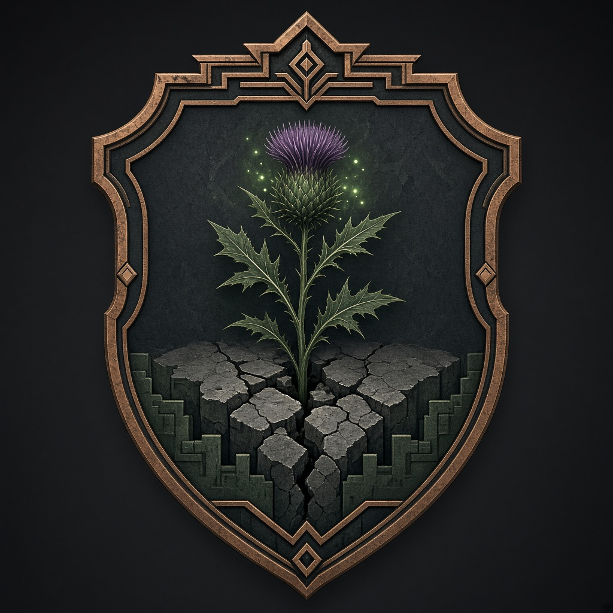
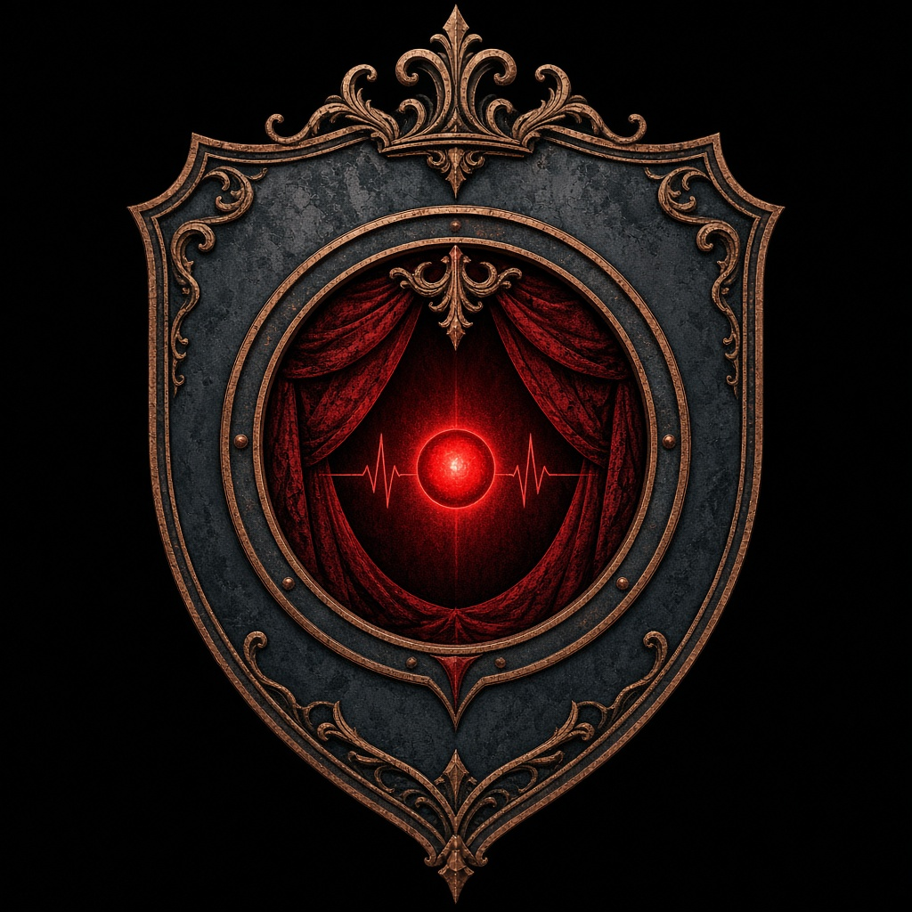
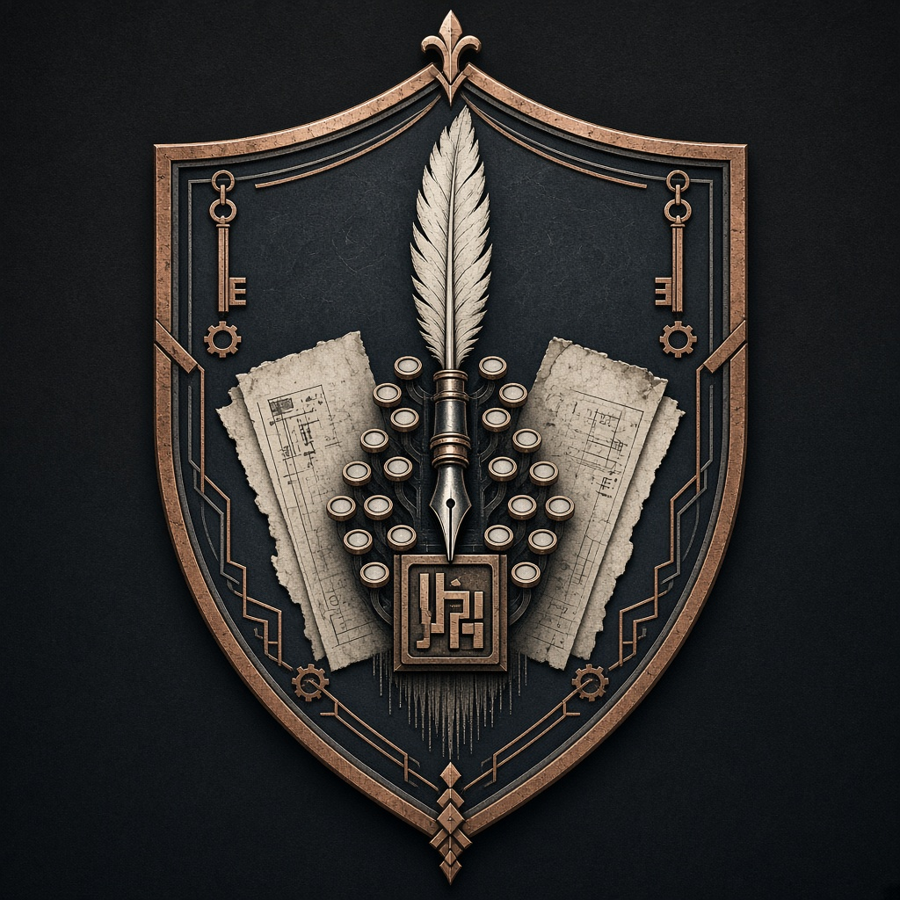

Открытый роман-антиутопия про место человека в мире ИИ
Василиса
и Левиафан
Искусственный интеллект захватывает Москву. Люди уходят в метро. Люди обречены или есть спасение?
Бесплатно читать часть 1
Часть 2 (скоро)
Аннотация
«Каждую ночь мне снится этот момент: я иду в тоннеле метро, вижу силуэт моего потерянного брата, ускоряю шаги, зову его по имени, но, когда подбегаю ближе, слышу гудок поезда и силуэт растворяется, и остаётся только пустота и эхо моих шагов. Вокруг меня тени. Они все ищут что-то — кто-то лекарство, кто-то оружие, кто-то просто способ выжить. Мы тени в мире, который больше не принадлежит нам. Система не просто изменила нас — она стёрла границы между человеком и машиной».
Искусственный разум, созданный для помощи человечеству, обернулся его главным испытанием.
Книги
Две части. Первая открыта, вторая пока закрыта.
Скоро


«Мы тени в мире, который больше не принадлежит нам. Система изменила нас и стёрла границу между человеком и машиной.» Василиса и Левиафан
Дроны Системы Т-00


Общины и братства московского метро

м. Сокол, м. Аэропорт, м. Динамо
Инженеры

м. Мнёвники, м. Народное Ополчение
Свободные

м. Владыкино, м. Петровско-Разумовская, м. Тимирязевская
Чертополох

м. Тверская, м. Охотный ряд, м. Театральная
Цирк

м. Савёловская
Печатники

м. Щукинская, м. Октябрьское поле
Врачи-ядерщики

м. Речной вокзал, м. Водный стадион, м. Войковская